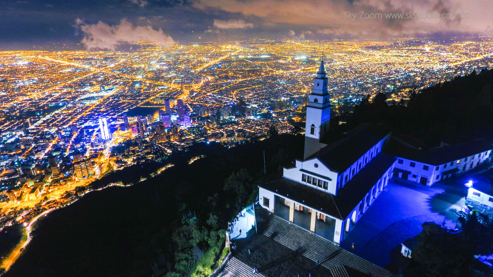
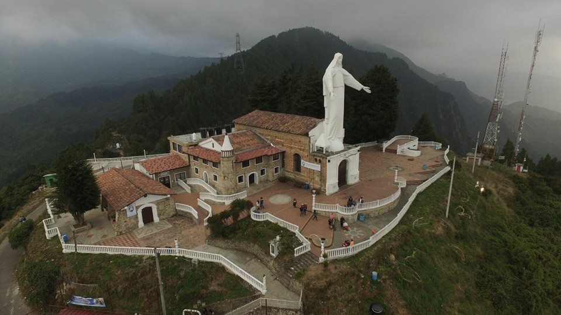
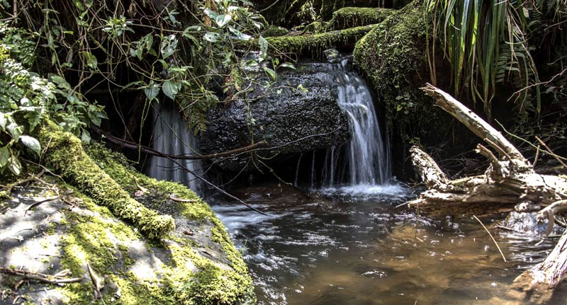
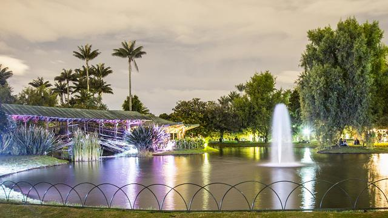
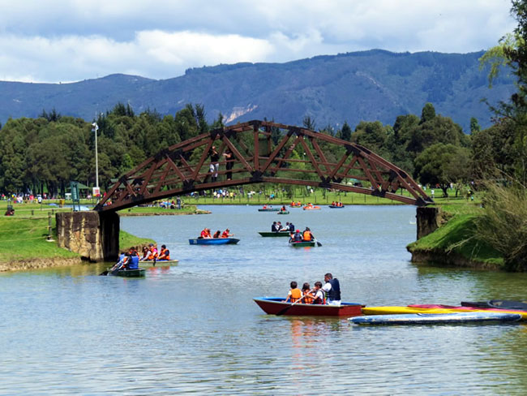
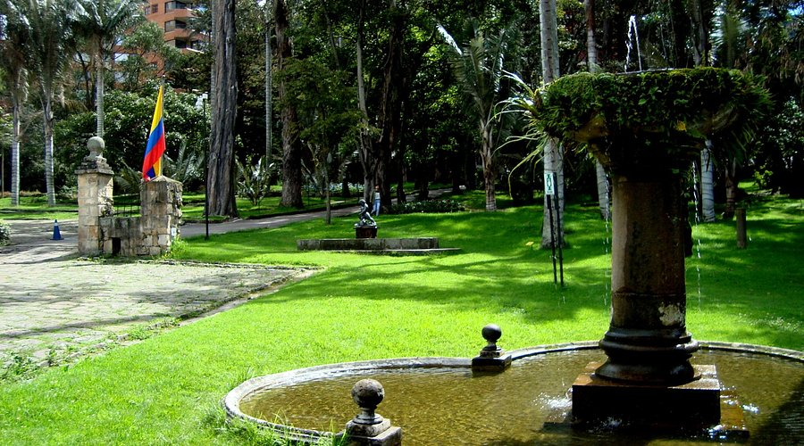

Naturaleza Capitalina
Cerros y Miradores

Cerro de Monserrate
El vigilante blanco de la ciudad. Sube en teleférico o funicular para tener la mejor vista panorámica de Bogotá.

Cerro de Guadalupe
Un lugar de paz y espiritualidad que ofrece una perspectiva única y menos conocida de la sabana bogotana.

Quebrada La Vieja
Un sendero ecológico en plena ciudad para conectar con el bosque andino y el agua pura de la montaña.
Parques y Jardines

Jardín Botánico
Un refugio de biodiversidad con el Tropicario más grande de Sudamérica, ideal para conocer la flora colombiana.

Parque Simón Bolívar
El "pulmón del mundo" en Bogotá. Extensas zonas verdes y un lago central para disfrutar del aire libre.

Parque del Chicó
Un rincón de historia y elegancia con jardines de estilo francés y una de las casonas más bellas de la zona norte.